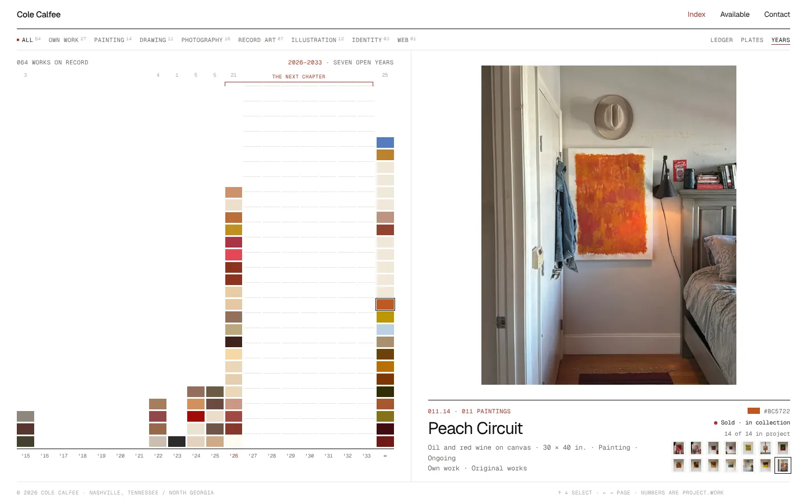
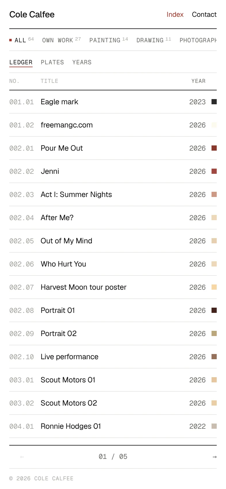

The current Index, taken to its conclusion. The ledger lists works rather than clients. 011.06 means project 011 (Paintings), sixth work. Hover a row and the plate fills instantly with the work, its medium, sale state, project siblings and its own signature colour, sampled from the image.
Plates turns the whole practice into one contact sheet. Years stacks each work as a colour chip on a timeline from 2015 to 2033. Everything after 2026 is open, ruled and waiting, and that is the part meant to make Cole want to make more.
- Look for
- Hover the ledger. ↑ ↓ keys. Filter "Own work". Years view.
- Strength
- Closest to the existing site. Scales to 1,000 works without redesign.
- Risk
- Can feel like a database. It needs the Archive's warmth on top.
- Built for Gen.
- Row 001 is marked "w/ Freeman General Contracting". Its plate names Built for Generations as a long project. The "Own work" filter removes it entirely.